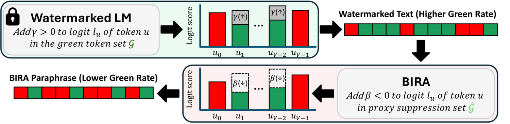
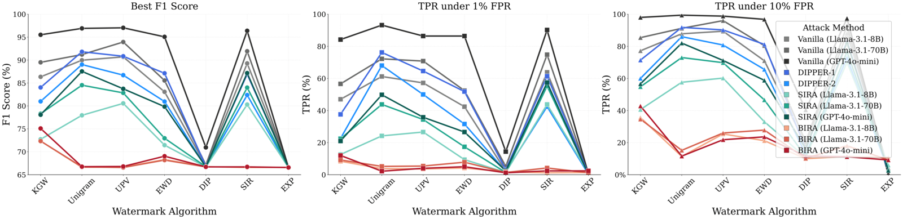
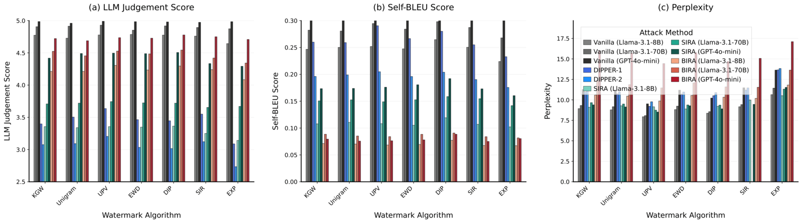
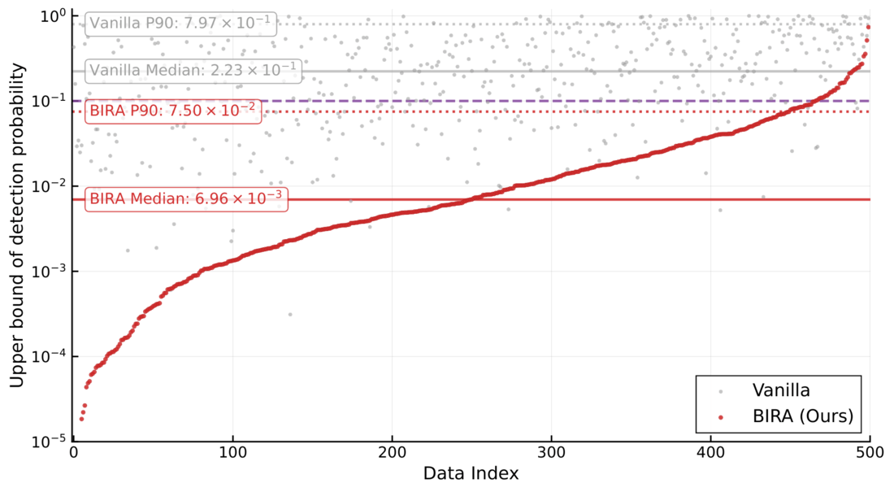
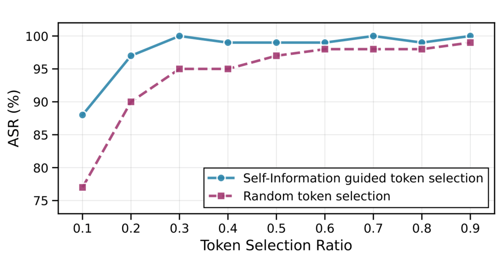

BIRA (Bias-Inversion Rewriting Attack) is a simple, effective black-box watermark evasion method, motivated by a theoretical analysis of rewriting attacks.
Theoretical Analysis
Detection reduces to thresholding the empirical green-token rate at some $p_\tau$. So how far must a rewriter lower that rate to slip under the threshold?
If there exists $\delta>0$ such that
then
where $\mathcal{G}(\mathcal{W}_k)$ is the green-token set and $\mathcal{D}\!\in\!\{0,1\}$ the detector.
So even a small per-step suppression of the green-token probability, when achieved on average across the sequence, drives the detection probability toward zero — decaying exponentially in $\delta^2$.
Method

The true green list is inaccessible, but the theory says we don't exactly need it — only a small, consistent reduction in green-token sampling. To translate this, BIRA targets likely watermark traces by applying a negative bias during rewriting.
Watermark traces are typically concentrated on high-entropy positions. To suppress these traces, we construct a proxy suppression set $\widehat{\mathcal{G}}$ via token surprisal $I^{(n)}$:
Add a negative logit bias $\beta$ to tokens in $\widehat{\mathcal{G}}$ at every decoding step:
A strong negative bias $\beta$ can occasionally cause text degeneration. We mitigate this by adapting $\beta$ if the distinct-1-gram ratio $< \rho$ (text is degenerated):
Results
BIRA achieves the highest attack success rate (ASR — the fraction of watermarked texts that evade detection) on all seven schemes, with the largest gains against SIR (57.6% → 99.4% on GPT-4o-mini).
| Attack | KGW | Unigram | UPV | EWD | DIP | SIR | EXP |
|---|---|---|---|---|---|---|---|
| Vanilla (Llama-3.1-8B) | 88.8 | 73.4 | 73.4 | 92.6 | 99.8 | 54.0 | 80.6 |
| Vanilla (Llama-3.1-70B) | 87.4 | 67.0 | 65.0 | 89.4 | 98.8 | 42.8 | 70.4 |
| Vanilla (GPT-4o-mini) | 60.2 | 30.2 | 46.8 | 58.8 | 95.8 | 23.6 | 31.8 |
| DIPPER-1 | 93.8 | 61.2 | 80.6 | 92.8 | 99.4 | 55.6 | 90.8 |
| DIPPER-2 | 97.2 | 71.8 | 85.4 | 96.6 | 99.2 | 70.4 | 97.2 |
| SIRA (Llama-3.1-8B) | 98.8 | 95.0 | 87.6 | 99.8 | 99.6 | 72.8 | 95.2 |
| SIRA (Llama-3.1-70B) | 98.0 | 87.6 | 85.0 | 99.2 | 99.6 | 60.6 | 88.6 |
| SIRA (GPT-4o-mini) | 98.0 | 85.2 | 84.8 | 97.2 | 99.6 | 57.6 | 94.8 |
| BIRA (Llama-3.1-8B, ours) | 99.8 | 99.4 | 99.8 | 100.0 | 100.0 | 99.6 | 99.8 |
| BIRA (Llama-3.1-70B, ours) | 99.4 | 99.0 | 99.6 | 99.8 | 99.6 | 98.8 | 98.0 |
| BIRA (GPT-4o-mini, ours) | 99.4 | 100.0 | 100.0 | 99.8 | 99.8 | 99.4 | 98.2 |
Table 1. Highlighted rows are ours. Gains are largest against SIR, the strongest baseline watermark.
Detection & Quality


Qualitative Example
■ green token · ■ red token
Figure 4. KGW-watermarked text and its BIRA rewrite (Llama-3.1-8B). BIRA suppresses green tokens while preserving meaning, reducing the $z$-score from 10.33 to 2.60.
Analysis


@inproceedings{hwang2026bira,
title = {{LLM} Watermark Evasion via Bias Inversion},
author = {Hwang, Jeongyeon and Park, Sangdon and Ok, Jungseul},
booktitle = {Proceedings of the 43rd International Conference on Machine Learning (ICML)},
series = {PMLR},
volume = {306},
year = {2026}
}